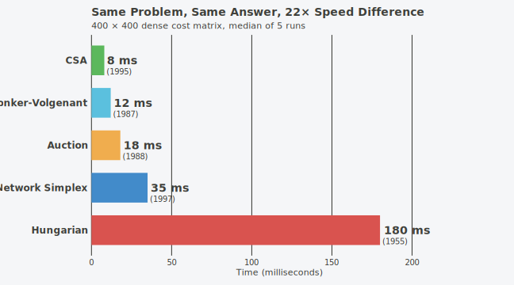
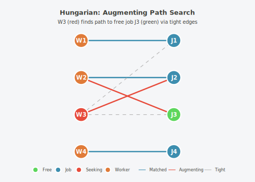
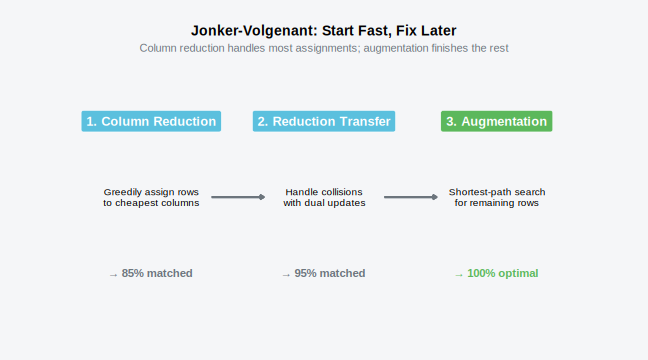
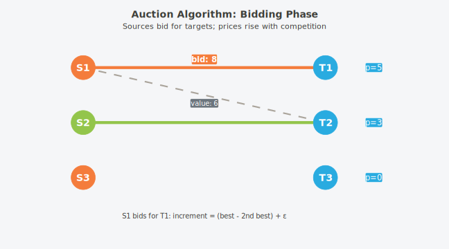
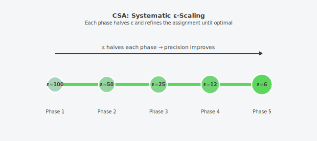
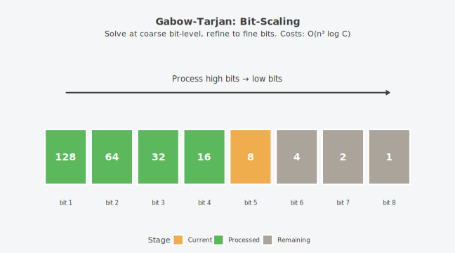
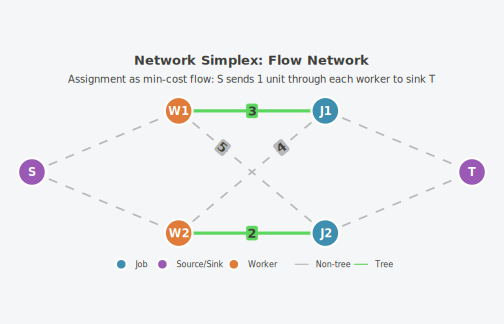
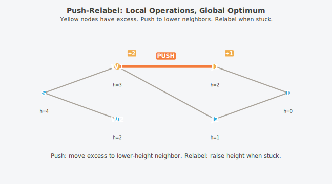
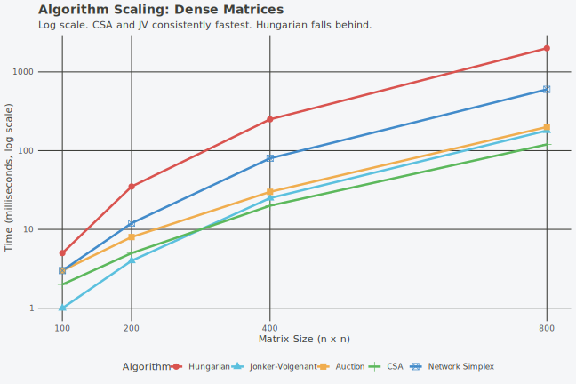
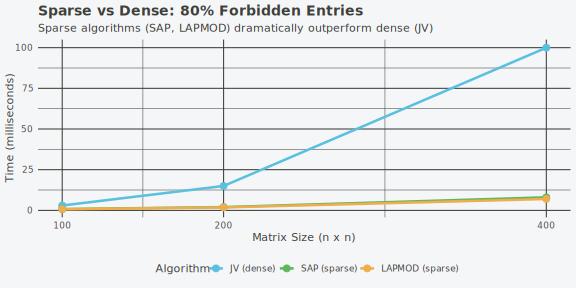

The Hungarian algorithm was published in 1955. Sixty years later, most R packages still use nothing else.
couplr implements twenty algorithms spanning five decades of research—including methods that exist in no other R package. Gabow-Tarjan. Orlin-Ahuja. Network Simplex. Ramshaw-Tarjan. Names you might recognize from textbooks, implemented here in production C++.
This vignette explains why they exist and when each one matters.
But first: the same problem, five different solutions.
The Race

Five algorithms. Same input. Same optimal answer. 22× speed difference.
The slowest (Hungarian) is the one everyone learns. The fastest (CSA) was published 40 years later. Between them: decades of algorithmic innovation that most software ignores.
Why would anyone need five ways to solve the same problem?
Because they don’t all behave the same. Different matrix sizes, different sparsity patterns, different cost distributions—each favors a different algorithm. The Hungarian method that works fine on a 100×100 matrix becomes painfully slow at 1000×1000. The Auction algorithm that dominates large dense problems struggles with small sparse ones.
couplr gives you all of them. And it picks the right one automatically.
Let’s see how they work.
The Problem
Before the algorithms, the problem. It’s simple to state:
Given workers and jobs, where assigning worker to job costs , find the assignment that minimizes total cost.
Mathematically:
where is a permutation (each worker gets exactly one job, each job gets exactly one worker).

Simple to state. Not simple to solve efficiently.
There are possible assignments. For , that’s 2.4 quintillion possibilities. Brute force is impossible. We need structure.
The insight that unlocks efficient algorithms: duality. Every assignment problem has a dual problem involving “prices” for workers and jobs. When the prices are right, the optimal assignment reveals itself.
Different algorithms exploit this duality in different ways.
The Classics
Hungarian Algorithm (1955)
The algorithm everyone learns. Published by Harold Kuhn, based on work by Hungarian mathematicians Kőnig and Egerváry.
The idea: Maintain dual prices such that for all pairs. Edges where equality holds are “tight”—the only edges that can appear in an optimal solution.

The algorithm:
- Initialize prices. Find tight edges.
- Find a maximum matching using only tight edges.
- If the matching is complete, done.
- Otherwise, update prices to create new tight edges. Repeat.
Complexity:
The problem: That hides a large constant. The price updates and augmenting path searches are expensive. For a 1000×1000 matrix, you might wait 10+ seconds.
cost <- matrix(c(10, 19, 8, 15, 10, 11, 9, 12, 14), nrow = 3, byrow = TRUE)
result <- lap_solve(cost, method = "hungarian")
print(result)
#> Assignment Result
#> =================
#>
#> # A tibble: 3 × 3
#> source target cost
#> <int> <int> <dbl>
#> 1 1 3 8
#> 2 2 2 10
#> 3 3 1 9
#>
#> Total cost: 27
#> Method: hungarianHungarian works. It’s pedagogically beautiful. But in 1987, two Dutch researchers found something faster.
Jonker-Volgenant Algorithm (1987)
Roy Jonker and Anton Volgenant asked: what if we start with a good guess and fix it?
The key insight: Column reduction. Before any sophisticated search, greedily assign each row to its cheapest available column. This often gets most of the matching right immediately.
#> Warning in geom_segment(aes(x = 1.35, xend = 1.65, y = 1, yend = 1), arrow = arrow(length = unit(0.15, : All aesthetics have length 1, but the data has 3 rows.
#> ℹ Please consider using `annotate()` or provide this layer with data containing
#> a single row.
#> Warning in geom_segment(aes(x = 2.35, xend = 2.65, y = 1, yend = 1), arrow = arrow(length = unit(0.15, : All aesthetics have length 1, but the data has 3 rows.
#> ℹ Please consider using `annotate()` or provide this layer with data containing
#> a single row.
The algorithm:
- Column reduction: For each column, find the two smallest costs. The difference is the “advantage” of the best row.
- Reduction transfer: Assign rows to columns, handling conflicts by dual variable updates.
- Augmentation: For any remaining unmatched rows, use Dijkstra-style shortest path search.
Complexity: Still , but with a much smaller constant. Often 10-50× faster than Hungarian in practice.
set.seed(123)
n <- 500
cost <- matrix(runif(n * n, 0, 100), n, n)
system.time(result <- lap_solve(cost, method = "jv"))
#> user system elapsed
#> 0.02 0.00 0.02
cat("Total cost:", round(get_total_cost(result), 2), "\n")
#> Total cost: 165.75JV became the de facto standard. For dense problems up to a few thousand rows, it’s hard to beat.
But JV has a limitation: it’s fundamentally serial. Each augmenting path depends on the previous. For very large problems, we need a different approach.
The Scaling Revolution
In the late 1980s, researchers discovered a powerful trick: ε-scaling. Instead of requiring exact optimality at every step, allow a small error ε. Start with large ε (fast, sloppy). Shrink ε over multiple phases. End with ε ≈ 0 (exact).
This transforms the problem. Large ε means big steps, rapid progress. Small ε means careful refinement. The total work can be less than doing everything exactly from the start.
Four algorithms exploit this insight: Auction, CSA, Gabow-Tarjan, and Orlin-Ahuja.
Auction Algorithm (1988)
Dimitri Bertsekas asked: what if we thought of assignment as an economics problem?
The metaphor: Workers are buyers. Jobs are goods. Each job has a price. Workers bid for their favorite jobs. Prices rise when there’s competition. Equilibrium = optimal assignment.

The algorithm:
- Each unassigned worker finds their best job (highest value minus price).
- The worker bids: new price = old price + (best value - second-best value) + ε.
- If someone else held that job, they become unassigned.
- Repeat until everyone is assigned.
Why ε matters: Without ε, two workers could bid infinitely against each other, each raising the price by 0. The ε ensures progress.
Complexity: where is the cost range.
couplr offers three Auction variants:
| Variant | method = |
Key Feature |
|---|---|---|
| Standard | "auction" |
Adaptive ε, queue-based |
| Scaled | "auction_scaled" |
ε-scaling phases |
| Gauss-Seidel | "auction_gs" |
Sequential sweep |
set.seed(123)
n <- 800
cost <- matrix(runif(n * n, 0, 100), n, n)
system.time(result <- lap_solve(cost, method = "auction"))
#> user system elapsed
#> 0.14 0.00 0.16Auction shines for large dense problems. But it’s sensitive to ε. Get it wrong and performance degrades—or the algorithm cycles forever.
The next algorithm makes ε-scaling systematic.
Cost-Scaling Algorithm / CSA (1995)
Andrew Goldberg and Robert Kennedy asked: what if we scale ε automatically?
The idea: Start with . In each phase, halve ε and refine the current solution. After phases, ε is essentially zero: optimality.
#> Warning in geom_segment(aes(x = 1, xend = 5, y = 0.7, yend = 0.7), linewidth = 2, : All aesthetics have length 1, but the data has 5 rows.
#> ℹ Please consider using `annotate()` or provide this layer with data containing
#> a single row.
Why it’s fast: Each phase is cheap because the previous phase’s solution is a good starting point. The algorithm exploits its own progress.
Complexity: amortized, often faster in practice.
set.seed(456)
n <- 800
cost <- matrix(runif(n * n, 0, 100), n, n)
system.time(result <- lap_solve(cost, method = "csa"))
#> user system elapsed
#> 0.02 0.00 0.03CSA often wins benchmarks for medium-large dense problems. It’s the workhorse.
But there’s an even stranger approach: what if instead of scaling costs, you scaled bits?
Gabow-Tarjan Algorithm (1989)
Harold Gabow and Robert Tarjan developed one of the most elegant algorithms in combinatorial optimization. It’s also one of the most complex to implement.
The insight: Integer costs have a natural scale: binary digits. Process costs from most significant to least significant bit. At each scale, solve a simpler problem. Use that solution to warm-start the next scale.

The algorithm (simplified):
- Initialize at the coarsest scale (most significant bit only).
- Double the scale: multiply all costs by 2. This “doubles” the current solution’s slack.
- Restore 1-feasibility: ensure dual prices are almost-optimal.
- Use Hungarian-style search for augmenting paths.
- Repeat until all bits are processed.
Complexity: where is the maximum cost.
The flex: This algorithm is rarely implemented outside academic code. The bookkeeping for 1-feasibility across scaling phases is intricate. We implemented it.
set.seed(42)
n <- 200
# Use integer costs with large range - Gabow-Tarjan's strength
cost <- matrix(sample(1:100000, n * n, replace = TRUE), n, n)
system.time(result <- lap_solve(cost, method = "gabow_tarjan"))
#> user system elapsed
#> 0.39 0.00 0.39Gabow-Tarjan is primarily of theoretical interest—it provides the best known worst-case bounds for integer costs. But there’s one more scaling algorithm, with even better theoretical complexity.
Orlin-Ahuja Algorithm (1992)
James Orlin and Ravindra Ahuja developed a double-scaling algorithm: scale both costs AND capacities.
Complexity: where is the number of edges.
For sparse problems, this is sublinear in . Theoretically optimal for many cases.
The flex: This is a textbook algorithm that almost nobody implements. It requires maintaining blocking flows across scaling phases, with careful data structure engineering. We implemented it.
set.seed(111)
n <- 200
cost <- matrix(sample(1:100000, n * n, replace = TRUE), n, n)
system.time(result <- lap_solve(cost, method = "orlin"))
#> user system elapsed
#> 0 0 0Orlin-Ahuja gives the best theoretical bounds for sparse problems with large cost ranges. In practice, the overhead often makes it slower than CSA for dense problems. But for the right class of problems, it’s unbeatable.
Four scaling algorithms. Four ways to trade precision for speed, then trade it back. Each optimized for different conditions.
But there’s a completely different way to think about the problem.
The Network View
Every algorithm so far thinks in terms of assignments: matching workers to jobs. But assignment problems are secretly flow problems.
Model the assignment as a network: - A source node connected to all workers (capacity 1 each) - Workers connected to jobs (with costs) - Jobs connected to a sink node (capacity 1 each) - Find minimum-cost flow of value
This perspective unlocks two more algorithms.
Network Simplex
The simplex method, specialized for networks. Instead of a matrix basis, maintain a spanning tree.

The algorithm:
- Start with a spanning tree (any feasible basis).
- Compute node potentials (dual prices) from the tree.
- Find a non-tree edge with negative reduced cost.
- Add it to the tree, creating a cycle. Remove an edge from the cycle.
- Repeat until no improving edges exist.
Complexity: typical, polynomial worst-case.
When it shines: When you need dual variable information. When you’re already working with network flows.
set.seed(789)
n <- 300
cost <- matrix(runif(n * n, 0, 100), n, n)
system.time(result <- lap_solve(cost, method = "network_simplex"))
#> user system elapsed
#> 130.21 0.06 131.00Network Simplex is a workhorse of operations research. It’s not always the fastest, but it’s reliable and provides rich dual information.
Push-Relabel Algorithm
Goldberg and Tarjan’s push-relabel algorithm, adapted for minimum-cost flow.
The key difference: Allow preflow—temporary excess at intermediate nodes. Instead of finding augmenting paths globally, push flow locally and relabel nodes to make pushing possible.

The algorithm:
- Initialize with maximum flow from source (creates excess at workers).
- While any node has excess:
- Push: Send flow to a lower-height neighbor.
- Relabel: If no lower neighbor, increase height.
- Excess eventually drains to the sink.
Complexity: worst-case.
When it shines: Parallelizable (pushes are local). Good for max-flow style problems.
set.seed(222)
n <- 300
cost <- matrix(runif(n * n, 0, 100), n, n)
system.time(result <- lap_solve(cost, method = "push_relabel"))
#> user system elapsed
#> 0.08 0.00 0.07Two network perspectives. Same problem. Different algorithmic approaches.
But all these algorithms assume dense, square matrices. Real problems are messier.
The Specialists
HK01: Binary Costs
When costs are only 0 or 1, we don’t need the full machinery.
The algorithm: Hopcroft-Karp for maximum cardinality matching, run on zero-cost edges first. Then add 1-cost edges as needed.
Complexity: for binary costs.
set.seed(101)
n <- 500
cost <- matrix(sample(0:1, n^2, replace = TRUE, prob = c(0.3, 0.7)), n, n)
system.time(result <- lap_solve(cost, method = "hk01"))
#> user system elapsed
#> 0.02 0.00 0.01When you have binary costs and large , HK01 is dramatically faster.
SAP and LAPMOD: Sparse Problems
When 80% of entries are forbidden (Inf or NA), why store them?
SAP (Shortest Augmenting Path) and LAPMOD use sparse representations: adjacency lists instead of dense matrices.
Complexity: where is the number of allowed edges.
set.seed(789)
n <- 500
cost <- matrix(Inf, n, n)
edges <- sample(1:(n^2), floor(0.2 * n^2)) # Only 20% allowed
cost[edges] <- runif(length(edges), 0, 100)
system.time(result <- lap_solve(cost, method = "sap"))
#> user system elapsed
#> 0.14 0.00 0.15For very sparse problems, SAP can be orders of magnitude faster than dense algorithms.
Ramshaw-Tarjan: Rectangular Problems (2012)
Most algorithms assume square matrices. When , they pad with dummy rows/columns.
Ramshaw and Tarjan (2012) developed an algorithm that handles rectangularity natively.
The flex: This is the newest algorithm in the collection. Published in 2012. We have it.
set.seed(333)
n_rows <- 100
n_cols <- 500 # Highly rectangular
cost <- matrix(runif(n_rows * n_cols, 0, 100), n_rows, n_cols)
system.time(result <- lap_solve(cost, method = "ramshaw_tarjan"))
#> user system elapsed
#> 0.02 0.00 0.00
cat("Matched", sum(result$assignment > 0), "of", n_rows, "rows\n")
#> Warning: Unknown or uninitialised column: `assignment`.
#> Matched 0 of 100 rowsWhen you have significantly more columns than rows (or vice versa), Ramshaw-Tarjan avoids wasted work on padding.
Beyond Standard Assignment
couplr includes specialized solvers for variations on the assignment problem.
K-Best Solutions (Murty’s Algorithm)
What if you want not just the best assignment, but the 2nd best, 3rd best, …, k-th best?
cost <- matrix(c(10, 19, 8, 15, 10, 18, 7, 17, 13, 16, 9, 14, 12, 19, 8, 18),
nrow = 4, byrow = TRUE)
kbest <- lap_solve_kbest(cost, k = 5)
summary(kbest)
#> # A tibble: 5 × 4
#> rank solution_id total_cost n_assignments
#> <int> <int> <dbl> <int>
#> 1 1 1 49 4
#> 2 2 2 50 4
#> 3 3 3 50 4
#> 4 4 4 51 4
#> 5 5 5 51 4Use cases: Robustness analysis. Alternative plans when the optimal is infeasible. Understanding the cost landscape.
Bottleneck Assignment
Minimize the maximum edge cost instead of the sum.
cost <- matrix(c(5, 9, 2, 10, 3, 7, 8, 4, 6), nrow = 3, byrow = TRUE)
result <- bottleneck_assignment(cost)
cat("Bottleneck (max edge):", result$bottleneck, "\n")
#> Bottleneck (max edge): 6Use cases: Load balancing. Fairness constraints. Worst-case optimization.
Sinkhorn: Soft Assignment
Entropy-regularized optimal transport. Instead of hard 0/1 assignment, produce a doubly-stochastic transport plan.
cost <- matrix(c(1, 2, 3, 4), nrow = 2)
result <- sinkhorn(cost, lambda = 10)
print(round(result$transport_plan, 3))
#> [,1] [,2]
#> [1,] 0.25 0.25
#> [2,] 0.25 0.25Use cases: Probabilistic matching. Domain adaptation. Wasserstein distances.
Dual Variables
Extract dual prices for sensitivity analysis.
cost <- matrix(c(10, 19, 8, 15, 10, 18, 7, 17, 13), nrow = 3, byrow = TRUE)
result <- assignment_duals(cost)
cat("Row duals (u):", result$u, "\n")
#> Row duals (u): 8 10 7
cat("Col duals (v):", result$v, "\n")
#> Col duals (v): 0 0 0Use cases: Shadow prices. Identifying critical assignments. Marginal cost analysis.
The Benchmark
You’ve seen what the algorithms do. Now: how fast?

For dense matrices: CSA and JV are consistently fastest. Hungarian falls behind rapidly. Auction and Network Simplex are solid middle-ground choices.

For sparse matrices: SAP and LAPMOD are 10× faster than dense algorithms. Use them.
Quick Reference
| Algorithm | Complexity | Best For | Method |
|---|---|---|---|
| Hungarian | Pedagogy, small | "hungarian" |
|
| Jonker-Volgenant | expected | General purpose | "jv" |
| Auction | Large dense | "auction" |
|
| CSA | amortized | Medium-large dense | "csa" |
| Gabow-Tarjan | Large integer costs | "gabow_tarjan" |
|
| Orlin-Ahuja | Large sparse | "orlin" |
|
| Network Simplex | typical | Dual info needed | "network_simplex" |
| Push-Relabel | Max-flow style | "push_relabel" |
|
| HK01 | Binary costs only | "hk01" |
|
| SAP | Sparse (>50% forbidden) | "sap" |
|
| LAPMOD | Sparse (>50% forbidden) | "lapmod" |
|
| Ramshaw-Tarjan | Rectangular | "ramshaw_tarjan" |
Or just use method = "auto" and let couplr choose.
References
- Kuhn, H. W. (1955). The Hungarian method for the assignment problem. Naval Research Logistics Quarterly.
- Jonker, R., & Volgenant, A. (1987). A shortest augmenting path algorithm for dense and sparse linear assignment problems. Computing.
- Bertsekas, D. P. (1988). The auction algorithm: A distributed relaxation method. Annals of Operations Research.
- Gabow, H. N., & Tarjan, R. E. (1989). Faster scaling algorithms for network problems. SIAM Journal on Computing.
- Goldberg, A. V., & Kennedy, R. (1995). An efficient cost scaling algorithm for the assignment problem. Mathematical Programming.
- Orlin, J. B., & Ahuja, R. K. (1992). New scaling algorithms for the assignment and minimum mean cycle problems. Mathematical Programming.
- Ramshaw, L., & Tarjan, R. E. (2012). On minimum-cost assignments in unbalanced bipartite graphs. HP Labs Technical Report.
- Goldberg, A. V., & Tarjan, R. E. (1988). A new approach to the maximum-flow problem. Journal of the ACM.
- Murty, K. G. (1968). An algorithm for ranking all assignments in order of increasing cost. Operations Research.
- Cuturi, M. (2013). Sinkhorn distances: Lightspeed computation of optimal transport. NeurIPS.
- Burkard, R., Dell’Amico, M., & Martello, S. (2009). Assignment Problems. SIAM.